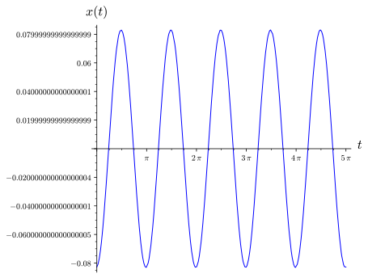

functions that are periodic are especially important. Recall that a function \(g(t)\) is periodic if
\begin{equation*}
g(t + T) = g(t)
\end{equation*}
for all \(t\) and some fixed constant \(T\text{.}\) The most familiar periodic functions are
\begin{equation*}
g(t) = \sin \omega t \mbox{ and } g(t) = \cos \omega t.
\end{equation*}
The period for each of these two functions is \(2 \pi / \omega\) and the frequency is \(\omega / 2 \pi\text{.}\) These two functions share the additional property that their average value is zero. That is,
We say that sinusoidal forcing occurs in the differential equation
\begin{equation*}
x'' + px' + qx = A \cos \omega t + B \sin \omega t.
\end{equation*}
Subsection4.3.1Complexification
Given a second-order linear differential equation
\begin{equation*}
a x'' + bx' + cx = A \cos \omega t + B \sin \omega t,
\end{equation*}
we can use Euler's formula, \(e^{i \beta t} = \cos \beta t + i \sin \beta t\) to derive a particular solution. That is, we will assume that our particular solution has the form
\begin{equation*}
x_c = x_\text{Re} + i x_\text{Im}
\end{equation*}
Now let us solve (4.3.1) using complex numbers. If we assume that the equation has a complex solution of the form \(x_c = x_\text{Re} + i x_\text{Im}\text{,}\) then
where \(\phi \approx 3.058451\text{.}\) We say that \(\phi\) is the phase angle of our solution. The amplitude of our solution is \(1/\sqrt{145}\) and the period is \(\pi\) (Figure 4.3.4).

Figure4.3.4.Steady state solution to \(x'' + 6 x' + 5x = \sin 2t\)
Activity4.3.2.Finding Particular Solutions of the Form \(y_p = A \cos(\omega t - \phi)\).
This is a nonautonomous system, and the tangent vector of a solution curve in the phase plane depends not only on the position \((x, y)\text{,}\) but also on the time \(t\text{.}\) In other words, the direction field changes with time. Since the direction field changes with time, two solutions with the same \((x,y)\) value at different times can follow different paths. Consequently, solutions can cross each other in the \(xy\)-plane without violating the Existence and Uniqueness Theorem.
and we will use the Method of Undetermined Coefficients and assume that we can find a particular solution of the form \(x_c = A e^{3it}\text{.}\) Substituting \(x_c\) into equation (4.3.3), we find that
\begin{equation*}
(8 + 6i) A e^{3it} = -2 e^{3it}.
\end{equation*}
Thus, \(x_c\) is a solution if
\begin{equation*}
A = \frac{-2}{8 + 6i} = - \frac{4}{25} + \frac{3}{25} i
\end{equation*}
Since \(y = x'(t)\text{,}\) we can now graph the solution curve in the phase plane (Figure 4.3.7). Notice how the solution curve can intersect itself. The restoring force and damping are proportional to \(x\) and \(y = x'\text{,}\) respectively. When \(x\) and \(y\) are close to the origin, the external force is as large or larger than the restoring and damping forces. In this part of the \(xy\)-plane, the external force overcomes the damping and pushes the solution away from the origin.
If we examine the phase plane for this solution (Figure 4.3.9), we see that the initial damping and restoring forces are much larger than the external force. Thus, if we are far from the origin, the solutions in the \(xy\)-plane tend to spiral towards the origin and are similar to the solutions of the unforced equation.
The functions \(\sin \omega t\) and \(\cos \omega t\) are periodic with period \(2 \pi / \omega\) and frequency \(\omega / 2 \pi\text{.}\) These average value of each of these functions is zero.
We can use Euler's formula and complexification to solve the equation
where the forcing function \(g(t)\) is \(\sin \omega t\) or \(\cos \omega t\text{.}\) Furthermore, we can use complex numbers to express our solution in the form
\begin{equation*}
x(t) = A \cos(\omega t - \phi),
\end{equation*}
where \(A\) is the amplitude of the solution, \(\omega / 2 \pi\) is the frequency of the solution, and \(\phi\) is the phase angle.
we obtain a nonautonomous system. In this case the direction field changes with time, and two solutions with the same \((x,y)\) value at different times can follow different paths. Therefore, solutions can cross each other without violating the Existence and Uniqueness Theorem.
If we are far from the origin, the solutions in the \(xy\)-plane tend to spiral towards the origin and are similar to the solutions of the unforced equation. When \(x\) and \(y\) are close to the origin, the external force is as large or larger than the restoring and damping forces. In this part of the \(xy\)-plane, the external force overcomes the damping and pushes the solution away from the origin.
Reading Questions4.3.4Reading Questions
1.
What does complexification mean?
2.
Is it possible for solution curves to intersect in the phase plane of a nonautonomous system? Why or why not?
Finding Frequencies, Amplitudes, and Phase Angles.
Find a particular solution of the form \(y_p = A \cos(\omega t - \phi)\) for each equation in Exercise Group 4.3.5.11–17 and determine the frequency \(\omega\text{,}\) amplitude \(A\text{,}\) and phase angle \(\phi\) of the solution.